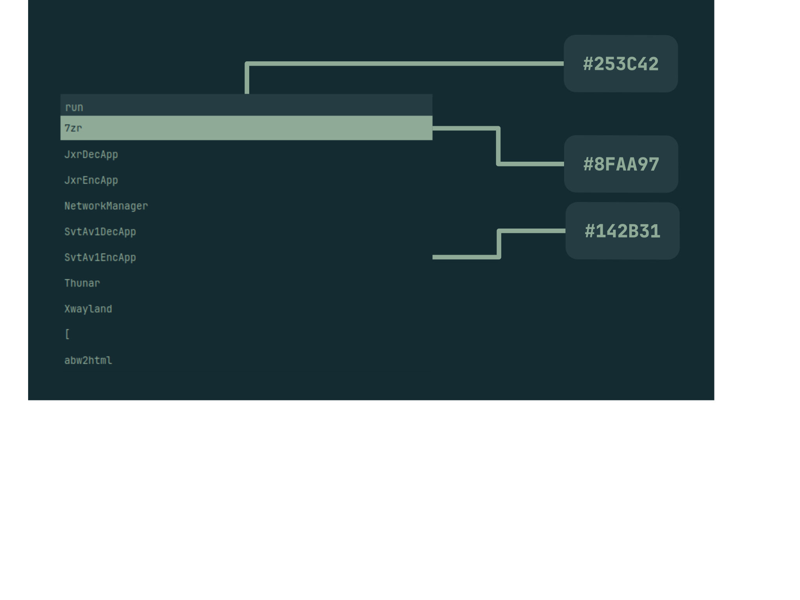

GreenBox
Isso mesmo, eu estou desenvolvendo a minha própria paleta de cores.
No momento eu só tenho 3 cores, todas elas são tons de verde, porém, já adicionei ela no meu Window Manager e no meu menu de sistema.
Eu estou me inspirando na paleta de cores Everforest, por conta de seus tons relaxantes e com ótimo contraste, a diferença é que eu quero fazer uma paleta de cores que combine com qualquer paisagem natural, não só florestas/matas fechadas.
Já tenho um protótipo de documentação para ela em desenvolvendo também, serve também como uma “cola” para quando eu quiser me lembrar qual cor é a melhor para situação X ou Y.

Não é muita coisa, mas já é um começo, e eu estou muito entusiasmado com o projeto.
Até o próximo post!